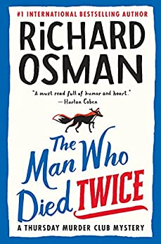

Odjava
Prijava
Vaš Web preglednik ne podržava JavaScript.
Kreativna
Gumb
Tajni dnevnik Adriana Molea
Obrazac
Multimedija
O autoru
Kreativna
Popis
Ovo je kreativna stranica
Richard Osman: Čovjek koji je dvaput umro

Izdavač: Pamela Dorman Books
Datum objave: 28. rujna 2021.
Stranice: 365
Izvor:
Amazon